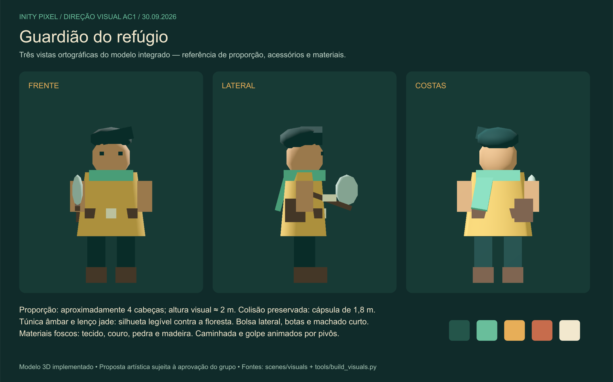
Guardião do refúgio
Frente, lateral e costas; túnica, lenço, bolsa, arma e materiais.
Fonte SVG · PNG para o TrelloDomestique. Posicione. Defenda. Uma clareira, um guardião e uma aliança para atravessar a noite.
Nome do jogo atualizado · identidade em revisão pelo grupo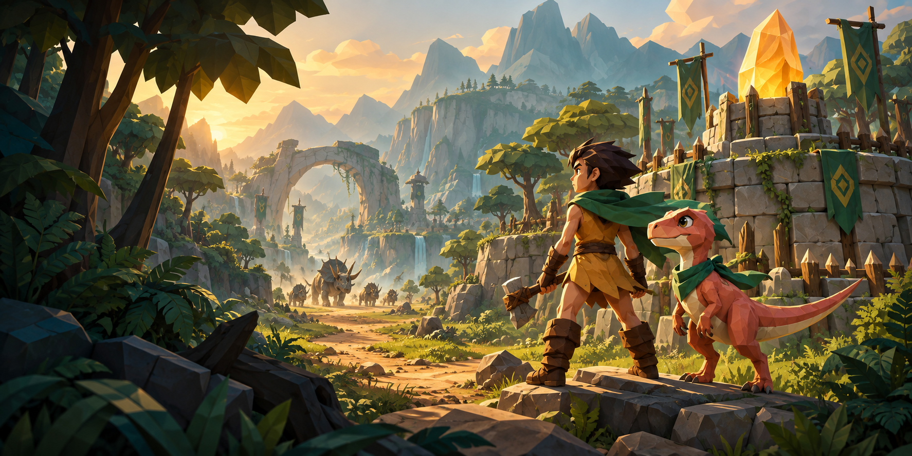
Projeto, recursos e evidências produzidos. Playtest humano, audição, funções individuais e aprovação do grupo continuam pendentes. Trello não publicado. O PCK usa a Godot instalada; não é um aplicativo independente.
A arte de apresentação define o clima. As pranchas abaixo mostram as malhas simples efetivamente integradas, com suas fontes editáveis e as diferenças entre estados.

Frente, lateral e costas; túnica, lenço, bolsa, arma e materiais.
Fonte SVG · PNG para o Trello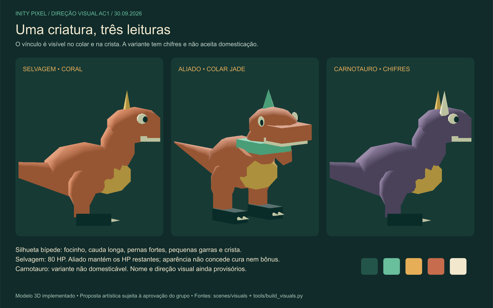
Cauda, crista, colar de vínculo e chifres. A domesticação preserva os HP.
Fonte SVG · PNG para o Trello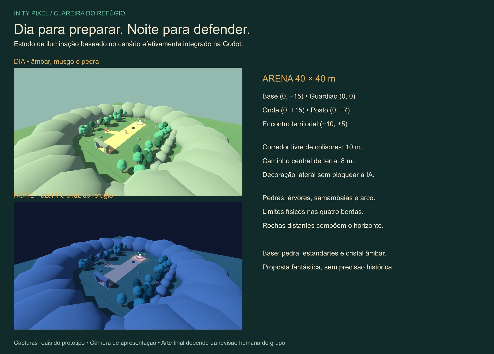
Dia/noite capturados na engine; base, posto, entrada e corredor livre.
Fonte SVG · PNG para o Trello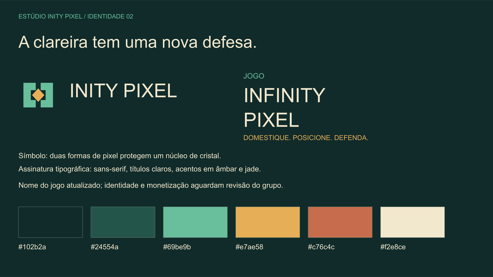
Nome do jogo, marca do estúdio, paleta e tipografia aplicados ao protótipo.
Fonte SVG · PNG para o TrelloPlanta editável da arena · Recursos, fontes e créditos
Capturas reais da Godot. As cenas de teste organizam posições para isolar comportamentos; não representam aprovação de playtest humano.
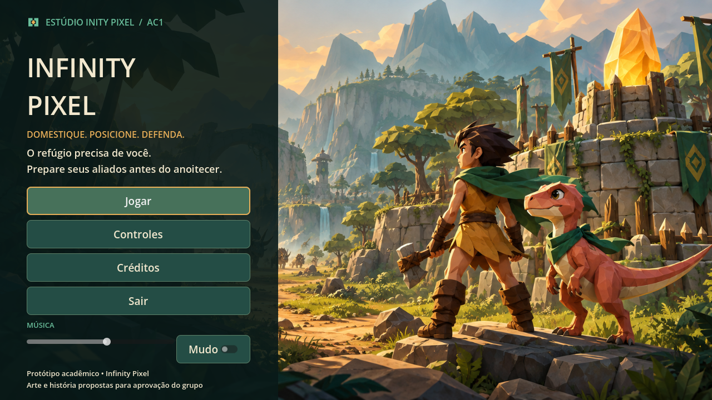
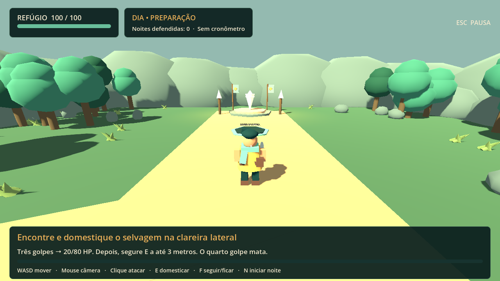
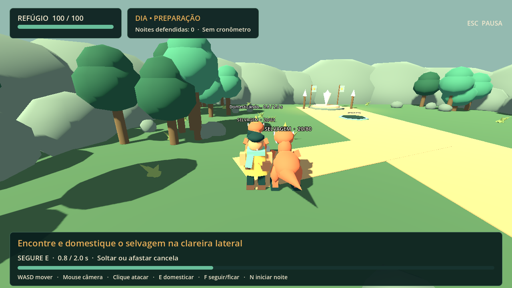
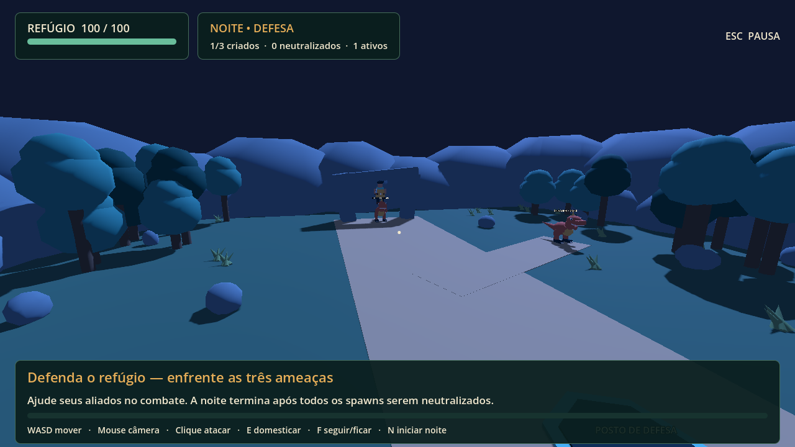
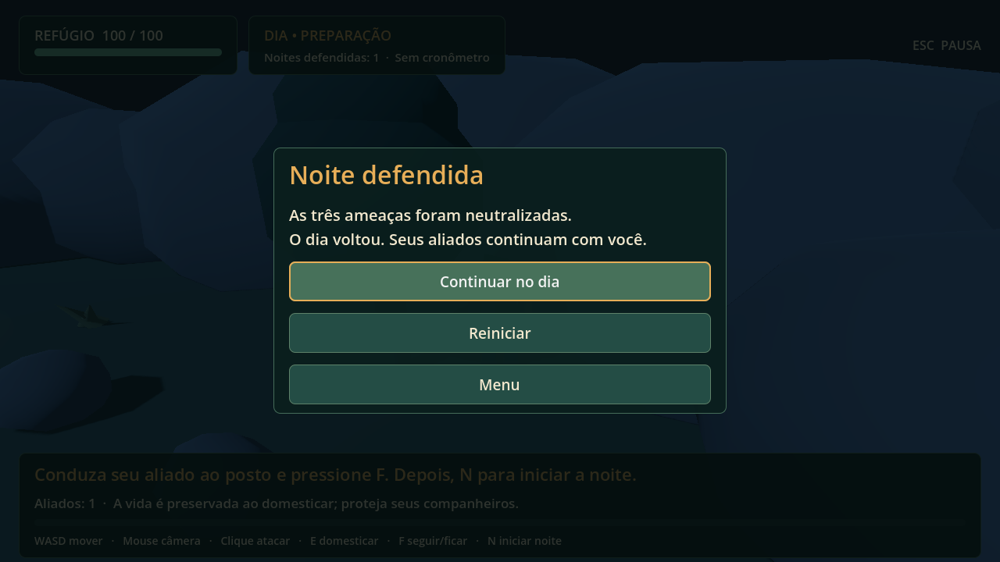
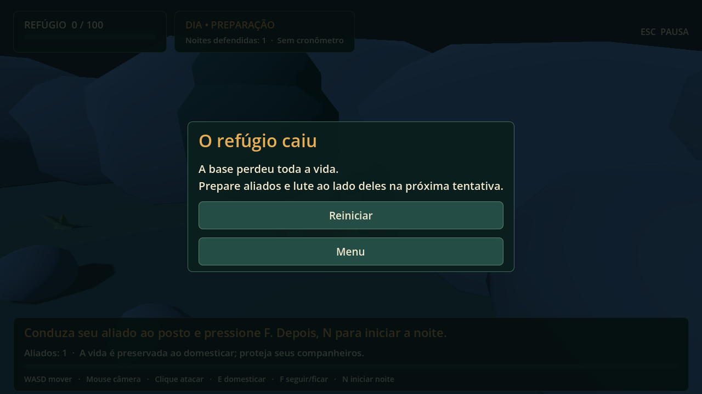
Menu em 1920×1080 · HUD em 1920×1080 · Resultados e roteiro humano
Composição original sintetizada: introdução, tema, variação, ponte e retorno. Sem samples externos. Análise técnica sem clipping; musicalidade, emenda e equilíbrio aguardam audição humana.
Composição de referência, 56 compassos em ré menor.
Instrumentação mais leve; aplicada no menu e no dia.
Densidade rítmica maior para a fase de defesa.
Sinal de vitória derivado do tema.
Sinal descendente para encerrar a tentativa.
Importe project.godot na Godot 4.7.2 e pressione F5. A pasta delivery contém PCK, iniciador local e vídeo AVI com áudio. O ZIP preserva código, fontes de arte/áudio e documentação.
Templates ausentes impedem o aplicativo independente. Veja instruções de execução e exportação.